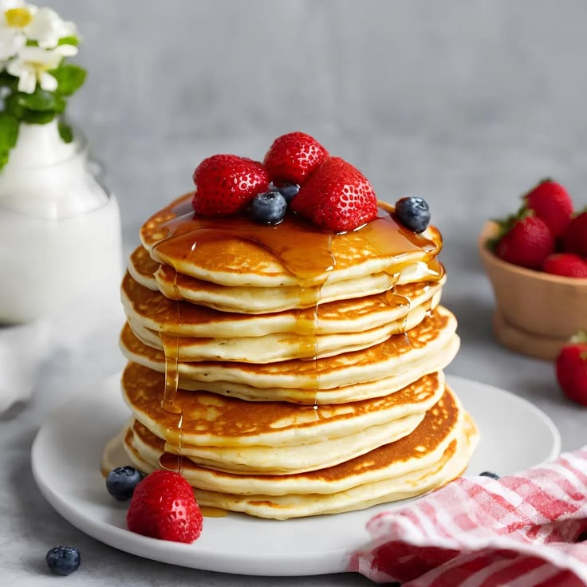

Pancakes

← Back to Recipes
Description
These classic, fluffy homemade pancakes are light, golden and easy to whip up from scratch on a weekend morning.
Serve them hot off the griddle with a knob of butter, strawberries, blueberries, bananas, and a generous drizzle of some warm maple syrup.
Ingredients
- 1 ½ cup all-purpose flour
- 3 ½ teaspoons baking powder
- 1 tablespoon white sugar
- 1 teaspoon salt
- 1 ¼ cups milk
- 1 egg
- 3 tablespoons butter, melted
Steps
- In a large bowl, sift together the flour, baking powder, sugar, and salt.
- Make a well in the center and pour in the milk, egg, and melted butter; mix well until smooth.
- Heat a lightly oiled griddle or frying pan over medium-high heat.
- Pour or scoop the batter onto the griddle, using approximately ¼ cup for each pancake.
- Brown on both sides and serve hot!
Enjoy your meal!
← Back to Recipes